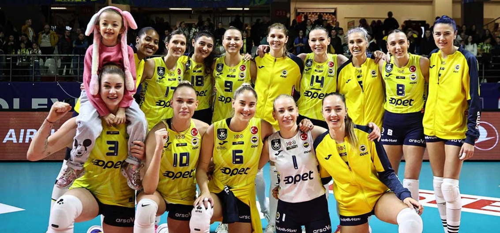

KURULUŞU
İlk denemeler
1920'li yılların ikinci yarısında Türkiye'de kadınlararası ilk spor faaliyetlerinin Fenerbahçe Kulübü'nde başlamasıyla birlikte, atletizm, kürek ve teniste sarı-lacivertli kulübün ilk kadın sporcularının ortaya çıkması gecikmedi. Bu dönemde kadınlardan kurulu ilk voleybol takımı da 1927 yılında yine Fenerbahçe Kulübü'nde oluşturuldu.Fenerbahçe’nin 1927-29 yıllarında İstanbul şampiyonlukları kazanan erkek voleybol takımında başarı ile yer alan Yüksek Mühendis Sabiha Rıfat'ın kaptanlık ettiği bu kız takımının ömrü, rakipsizlik nedeniyle, iki yıldan fazla sürmedi ve takım dağıldı.
İkinci kuruluş ve birinci altın devir
Doktor Selim Çapa'nın gayretleriyle 1954 yılında Çamlıca Kız Lisesi ile işbirliği yapılarak ortaya çıkarılan güçlü takım,1955 yılında başlayan kadınlararası müsabakalarda uzun zaman şampiyonlukları elinde tuttu. 1955 yılında ilk Teşvik Turnuvası'nı kazandıktan sonra 21 Ocak 1956 tarihinde Galatasaray'ı 2-0 yenerek ilk İstanbul şampiyonluğuna, 16 Şubat 1956'da da İÜSBK'yı 2-0 yenerek ilk Türkiye şampiyonluğuna ulaştı. 1956-57, 1957-58, 1958-59 ve 1960-61 İstanbul şampiyonluklarıyla 1957, 1958, 1959 ve 1960 Türkiye şampiyonluklarını yenilmeden kazanan bu kadro 1957'de kurulan ve 3-5 Mayıs 1957 tarihlerinde düzenlenen "Birinci İstanbul Enternasyonal Voleybol Turnuvası"nda ilk maçlarını yapan millî takıma Ayten Salih, Nazmiye Kor, Güneş Çapa ve Seta Yağcıoğlu'nu verdi.Takım kaptanı Ayten Salih'in 1960 yılında üniversiteden mezun olarak 16 Aralık 1960'ta bağımsız olan Kıbrıs Cumhuriyeti'ne gitmesiyletakım önemli ölçüde güç kaybetti ve 23-25 Mart 1961 tarihlerinde Ankara'da düzenlenen Türkiye Kadınlar Voleybol Şampiyonası'nda final maçında Galatasaray'a 3-2 yenilerek 1956 yılından beri beş sezondur koruduğu Türkiye şampiyonluğunu kaybetti.
Dünya Şampiyonu Başarısı
Fenerbahçe, Dünya Kulüplerarası Voleybol Şampiyonası Finali'nde Brezilya'dan Sollys Osasco'yu 3-0 mağlup ederek dünyanın en büyüğü oldu. Dünya Kulüplerarası Voleybol Şampiyonası'nda Fenerbahçe (kadın voleybol takımı) final müsabakasında Sollys Osasca ile karşı karşıya geldi. Takımımız bu karşılaşmadan 25-23, 25-22 ve 25-17'lik setlerle 3-0 yengin ayrıldı. Bu sonuçla takım, Brezilya Ligi'nin son şampiyonu Sollys Osasca'yı mağlup ederek Dünya Şampiyonu oldu. Böylece Fenerbahçe Türk voleybol tarihinde bir ilki gerçekleştirdi.Mevcut Oyuncular
| No | Ad Soyad | Pozisyon | Doğum tarihi | Boy | Ülke |
|---|---|---|---|---|---|
| 1 | Gizem Örge | Libero | 26 Nisan 1993 | 1.70 | Türkiye |
| 3 | Magdalena Stysiak | Pasör Çaprazı | 03 Aralık 1999 | 2.03 | Polonya |
| 5 | Ergül Avcı Eroğlu | Orta oyuncu | 24 Temmuz 1987 | 1.90 | Türkiye |
| 6 | Ada Germen | Libero | 24 Haziran 1997 | 1.84 | Türkiye |
| 7 | Cansu Çetin | Smaçör | 26 Mayıs 1993 | 1.83 | Türkiye |
| 8 | Aslı Kalaç | Orta oyuncu | 13 Aralık 1995 | 1.85 | Türkiye |
| 9 | Meliha Diken | Smaçör | 19 Eylül 1993 | 1.89 | Türkiye |
| 10 | Arina Fedorovtseva | Smaçör | 19 Ocak 2004 | 1.90 | Rusya |
| 12 | Ana Cristina de Souza | Smaçör | 07 Nisan 2004 | 1.92 | Brezilya |
| 13 | Meryem Boz | Pasör Çaprazı | 2 Mart 1988 | 1.90 | Türkiye |
| 14 | Eda Erdem Dündar (K) | Orta Oyuncu | 22 Haziran 1987 | 1.88 | Türkiye |
| 15 | Irina Fetisova | Orta Oyuncu | 07 Eylül 1994 | 1.90 | Rusya |
| 17 | Bojana Drča | Pasör | 29 Mart 1988 | 1.86 | Sırbistan |
| 18 | Buse Ünal | Pasör | 29 Temmuz 1997 | 1.88 | Türkiye |
